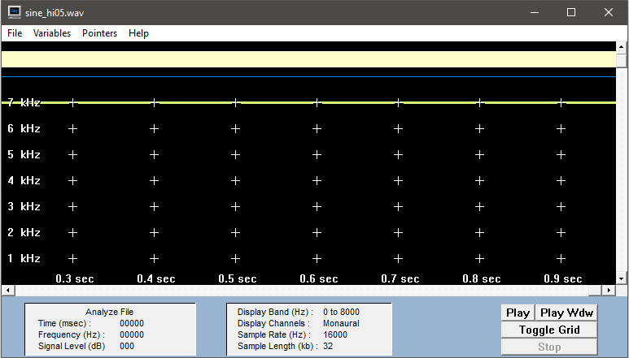
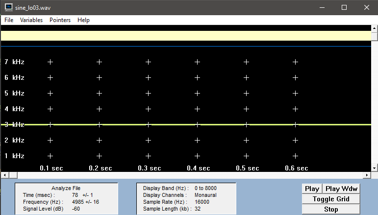

Übung 1
Nr.1b)
Je häufiger abgetastet wird, desto detaillierter wird ein Klang abgebildet. Bei der Musik ist die Anzahl der Schwingungen im gleichen Zeitraum viel größer als bei der Sprache. Um eine genaue Wiedergabe der Musik zu gewährleisten ist es daher notwendig eine hohe Abtastarte zu verwenden.
Nr.1c
Channels:gibt die Anzahl der Kanäle an (Mono/Stereo)
Sample Rate: die Häufigkeit der Abtastungen in der Sekunde
Frames: gibt die Anzahl aller ausgeführten Abtastungen an
Valid Bits:gibt die Anzahl der Bits an, die pro Sekunde abgetastet werden
Bytes per Sample:gibt die nötige Datenrate pro Abtastung an
Nr.1d)
Musikdatei:16bit * 2 * 44,1kHz = 1.441,2 kBit/s
Sprachdatei:16bit * 1 * 8kHz = 128kBit/s
Nr.2a
Sourcecode
for (int i=0; i < samples;i++) {
System.out.println(readWavFile.sound[i]);
}
Sin_HI:
- 13623
- 16069
- 9102
- -3196
- -13623
- -16069
- -9102
- 3196
- 13623
Frequenz ( Sinus_HI ) =Abtastfrequenz (16kHz) / ~2 Abtastperioden = ~8kHz
Sin_LO:
- 13623
- 16069
- 9102
- -3196
- -13623
- -9102
- 3196
- 13623
- 16069
Frequenz ( Sinus_LO ) =Abtastfrequenz (16kHz) / ~5 Abtastperioden = ~3kHz
Nr.2b
 Nr.2 c
Abtasttheorem: fa > 2x f0 max
Mathematische Vorschrift, die besagt, dass bei der Analog/Digital-Wandlung die Abtastfrequenz mehr als doppelt so hoch sein muss wie die höchste Frequenz des zu digitalisierenden analogen Signals. Die Abtastfrequenz eines Audiosignals muss demnach größer als 40 kHz, die Abtastfrequenz eines Videosignals in HD größer als 60 MHz und in SD größer als 10 MHz sein. Das Abtasttheorem wird auch Nyquist- oder Shannon-Theorem genannt.

Nr.2 d
Die Soundkarte sorgt mithilfe eines Tiefpassfilters für das Einhalten des Abtasttheorems, da es alle Frequenzen die >= fa / 2 sind herausfiltert. Dadurch wird Aliasing verhindert.
Nr.2 e
for (int i=0; i < samples/2;i++) {
readWavFile.sound[i] = readWavFile.sound[i*2];
}
sampleRate = sampleRate/2;
numFrames = numFrames /2;
Nr.2 f
Original (LO)
nach Downsampling (LO)

Frequenz: 3000Hz
Original (HI)
nach Downsampling (HI)

Frequenz: 1000Hz
Wenn man geeignet bandbegrenzen würde, wären bei der sine_hi03.wav keine Veränderungen aufgetreten. Es kam zur Verfälschung bei der Audiospur sine_hi00.wav, dadurch dass es keine geeignete Bandbegrenzung gibt und das Abtasttheorem nicht eingehalten werden kann. Bei sine_lo03.wav kam es zu keiner Verfälschung, weil das Abtasttheorem nach Verringerung der Abtastfrequenz trotzdem eingehalten wurde.
Nr.3a)
Bei 16 bit Auflösung ist die höchstmögliche Anzahl der darstellbaren Amplitudenwerte 216=65536 und bei 8 bit Auflösung sind es 28=256.
Nr.3b)
int reduced_bits = 4;
for (int i=0; i < samples;i++) {
readWavFile.sound[i] /= Math.pow(2.0, reduced_bits);
readWavFile.sound[i] *= Math.pow(2.0, reduced_bits);
}
Nr.3c)
Sprache:
Originalaufnahme. |
Aufnahme mit 4 Bit Reduktion. |
Aufnahme mit 12 Bit Reduktion. |


Die obige Grafik zeigt die Bitreduktion der monoton Sprachaufnahme im Originalzustand (links), der Aufnahme mit 4 Bit Reduktion (12 Bit verbleibend) und der Aufnahme mit 12 Bit Reduktion (4 Bit verbleibend) Wie in der Grafik zu sehen ist, sind die Unterschiede azwischen der Orginalaufnahme und der 4 Bit reduzierten Aufnahme maginal. Große unterschiede sind jedoch auf der 12 Bit reduzierten Aufnahme zu erkennen. Bei dieser ist die Stimme kaum noch zu verstehen. Auch im Spektrogramm ist dies deutlich zu erkennen, da die entweder sehr starke Ausschläge auftreten, oder im Orginal vorhandene Frequenzen jetzt nicht mehr vorliegen.
Musik:
Originalaufnahme. |
Aufnahme mit 4 Bit Reduktion. |
Aufnahme mit 12 Bit Reduktion. |


- Die obige Grafik zeigt die Bitreduktion der Musikaufnahme im Originalzustand (links), der Aufnahme mit 4 Bit Reduktion (12 Bit verbleibend) und der Aufnahme mit 12 Bit Reduktion (4 Bit verbleibend)
- Im Gegensatz zur Sprachaufnahme, ist selbst bei 12 Bit Reduktion (also 4 Bit verbleibend) die Musik deutlich zu hören, auch wenn eine sehr starke Störung wahrnehmbar ist.
- Die Unterschiede hinsichtlich der Auswirkungen der Bitreduktion auf Musik und Sprache werden damit Begründet, dass bei der Musik eine durchgehende Geräuschkulisse geschaffen wird und somit ein dichteres Spektrum hinsichtlich Frequenz und Lautstärke erreicht wird. Der durch die Bitreduktion entstehende Fehler wird somit zwar hörbar, aber es stehen noch genug Informationen zur Verfügung. Aufgrund der starken Schwankungen bei der Sprache und der fehlenden Durchgängigkeit wirkt sich ein auftretender Fehler somit stärker aus.
Nr.3d)
Besonders störend ist das Rauschen, welches entsteht. Es wirkt zunächst im Hintergrund und verlagert sich "gefühlt" mit zunehmender Reduktion immer weiter in den Vordergrund, bis zuletzte die Musik / Sprache kaum bis gar nicht mehr zu verstehen ist.
Nr.3e)
reduced_bits = 1;
for (int i=0; i < samples;i++) {
readWavFile.sound[i] /= Math.pow(2.0, reduced_bits);
readWavFile.sound[i] *= Math.pow(2.0, 16 - reduced_bits -1);
}
Nr.3f
1-Bit Reduzierung ( Musikdatei )
8-Bit Reduzierung ( Musikdatei )
1-Bit Reduzierung ( Sprachdatei )

8-Bit Reduzierung ( Sprachdatei )
Bei beiden Dateien führt eine 1-Bit Reduzierung zu durchgängigem Rauschen Je höher die Bitzahl um die reduziert wird, desto schwächer ist das Rauschen